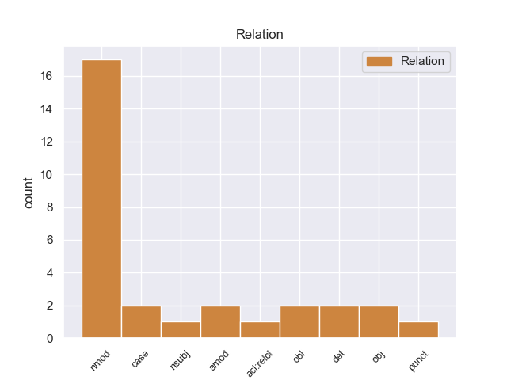
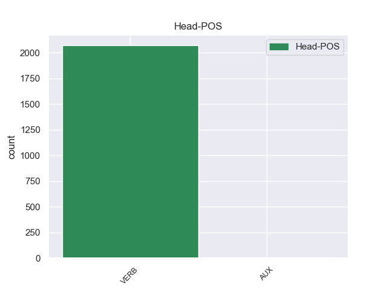

Distribution of features within this leaf



Agreement Rules sorted by frequency.
- When the dependent token is the nominal modifier(nmod) of the head token, and the head token is PROPN
1 En _ _ _ _ 0 _ _ _
2 2005 _ _ _ _ 0 _ _ _
3 , _ _ _ _ 0 _ _ _
4 participó _ _ _ _ 0 _ _ _
5 en _ _ _ _ 0 _ _ _
6 Supernatural _ _ _ _ 0 _ _ _
7 como _ _ _ _ 0 _ _ _
8 una _ _ _ _ 0 _ _ _
9 joven _ _ _ _ 0 _ _ _
10 alumna _ _ _ _ 0 _ _ _
11 , _ _ _ _ 0 _ _ _
12 y _ _ _ _ 0 _ _ _
13 en _ _ _ _ 0 _ _ _
14 Charmed charmed PROPN _ Mood=Ind|Number=Sing|Person=3|Tense=Pres|VerbForm=Fin 17 nmod _ _
15 , _ _ _ _ 0 _ _ _
16 como _ _ _ _ 0 _ _ _
17 Christy christy PROPN _ Mood=Ind|Number=Sing|Person=3|Tense=Pres|VerbForm=Fin 0 _ _ _
18 en _ _ _ _ 0 _ _ _
19 8 _ _ _ _ 0 _ _ _
20 episodios _ _ _ _ 0 _ _ _
21 . _ _ _ _ 0 _ _ _
1 Uno _ _ _ _ 0 _ _ _
2 de _ _ _ _ 0 _ _ _
3 los _ _ _ _ 0 _ _ _
4 casos _ _ _ _ 0 _ _ _
5 más _ _ _ _ 0 _ _ _
6 extraños _ _ _ _ 0 _ _ _
7 y _ _ _ _ 0 _ _ _
8 más _ _ _ _ 0 _ _ _
9 enquistado _ _ _ _ 0 _ _ _
10 es _ _ _ _ 0 _ _ _
11 el _ _ _ _ 0 _ _ _
12 caso caso NOUN _ Mood=Ind|Number=Sing|Person=3|Tense=Past|VerbForm=Fin 0 _ _ _
13 de _ _ _ _ 0 _ _ _
14 el _ _ _ _ 0 _ _ _
15 bielorruso _ _ _ _ 0 _ _ _
16 Hleb hleb NOUN _ Mood=Ind|Number=Sing|Person=3|Tense=Pres|VerbForm=Fin 12 nmod _ _
17 que _ _ _ _ 0 _ _ _
18 desde _ _ _ _ 0 _ _ _
19 que _ _ _ _ 0 _ _ _
20 fichó _ _ _ _ 0 _ _ _
21 por _ _ _ _ 0 _ _ _
22 el _ _ _ _ 0 _ _ _
23 club _ _ _ _ 0 _ _ _
24 no _ _ _ _ 0 _ _ _
25 ha _ _ _ _ 0 _ _ _
26 llegado _ _ _ _ 0 _ _ _
27 a _ _ _ _ 0 _ _ _
28 jugar _ _ _ _ 0 _ _ _
29 dos _ _ _ _ 0 _ _ _
30 partidos _ _ _ _ 0 _ _ _
31 seguidos _ _ _ _ 0 _ _ _
32 y _ _ _ _ 0 _ _ _
33 que _ _ _ _ 0 _ _ _
34 esta _ _ _ _ 0 _ _ _
35 es _ _ _ _ 0 _ _ _
36 la _ _ _ _ 0 _ _ _
37 ultima _ _ _ _ 0 _ _ _
38 temporada _ _ _ _ 0 _ _ _
39 con _ _ _ _ 0 _ _ _
40 contrato _ _ _ _ 0 _ _ _
41 en _ _ _ _ 0 _ _ _
42 el _ _ _ _ 0 _ _ _
43 club _ _ _ _ 0 _ _ _
44 culé _ _ _ _ 0 _ _ _
45 , _ _ _ _ 0 _ _ _
46 y _ _ _ _ 0 _ _ _
47 que _ _ _ _ 0 _ _ _
48 finalizará _ _ _ _ 0 _ _ _
49 su _ _ _ _ 0 _ _ _
50 vinculación _ _ _ _ 0 _ _ _
51 como _ _ _ _ 0 _ _ _
52 cedido _ _ _ _ 0 _ _ _
53 en _ _ _ _ 0 _ _ _
54 el _ _ _ _ 0 _ _ _
55 Wolfburgo _ _ _ _ 0 _ _ _
56 alemán _ _ _ _ 0 _ _ _
57 . _ _ _ _ 0 _ _ _
1 En _ _ _ _ 0 _ _ _
2 Hollywood _ _ _ _ 0 _ _ _
3 filmó _ _ _ _ 0 _ _ _
4 entre _ _ _ _ 0 _ _ _
5 otras _ _ _ _ 0 _ _ _
6 películas _ _ _ _ 0 _ _ _
7 La _ _ _ _ 0 _ _ _
8 pequeña _ _ _ _ 0 _ _ _
9 ( _ _ _ _ 0 _ _ _
10 1978 _ _ _ _ 0 _ _ _
11 ) _ _ _ _ 0 _ _ _
12 con _ _ _ _ 0 _ _ _
13 la _ _ _ _ 0 _ _ _
14 joven _ _ _ _ 0 _ _ _
15 Brooke _ _ _ _ 0 _ _ _
16 Shields _ _ _ _ 0 _ _ _
17 y _ _ _ _ 0 _ _ _
18 sobre _ _ _ _ 0 _ _ _
19 todo _ _ _ _ 0 _ _ _
20 Atlantic _ _ _ _ 0 _ _ _
21 City city PROPN _ Mood=Ind|Number=Sing|Person=3|Tense=Pres|VerbForm=Fin 0 _ _ _
22 ( ( ADP _ Mood=Ind|Number=Sing|Person=3|Tense=Pres|VerbForm=Fin 21 case _ _
23 1980 _ _ _ _ 0 _ _ _
24 ) _ _ _ _ 0 _ _ _
25 , _ _ _ _ 0 _ _ _
26 con _ _ _ _ 0 _ _ _
27 Burt _ _ _ _ 0 _ _ _
28 Lancaster _ _ _ _ 0 _ _ _
29 y _ _ _ _ 0 _ _ _
30 Susan _ _ _ _ 0 _ _ _
31 Sarandon _ _ _ _ 0 _ _ _
32 , _ _ _ _ 0 _ _ _
33 donde _ _ _ _ 0 _ _ _
34 relata _ _ _ _ 0 _ _ _
35 las _ _ _ _ 0 _ _ _
36 desventuras _ _ _ _ 0 _ _ _
37 de _ _ _ _ 0 _ _ _
38 un _ _ _ _ 0 _ _ _
39 pícaro _ _ _ _ 0 _ _ _
40 retirado _ _ _ _ 0 _ _ _
41 y _ _ _ _ 0 _ _ _
42 de _ _ _ _ 0 _ _ _
43 su _ _ _ _ 0 _ _ _
44 vecina _ _ _ _ 0 _ _ _
45 , _ _ _ _ 0 _ _ _
46 en _ _ _ _ 0 _ _ _
47 la _ _ _ _ 0 _ _ _
48 ciudad _ _ _ _ 0 _ _ _
49 de _ _ _ _ 0 _ _ _
50 los _ _ _ _ 0 _ _ _
51 casinos _ _ _ _ 0 _ _ _
52 . _ _ _ _ 0 _ _ _
1 Recuerda _ _ _ _ 0 _ _ _
2 que _ _ _ _ 0 _ _ _
3 con _ _ _ _ 0 _ _ _
4 el _ _ _ _ 0 _ _ _
5 maíz _ _ _ _ 0 _ _ _
6 transgénico _ _ _ _ 0 _ _ _
7 ( _ _ _ _ 0 _ _ _
8 también _ _ _ _ 0 _ _ _
9 tratado _ _ _ _ 0 _ _ _
10 con _ _ _ _ 0 _ _ _
11 Roundup _ _ _ _ 0 _ _ _
12 ) _ _ _ _ 0 _ _ _
13 se _ _ _ _ 0 _ _ _
14 alimentan _ _ _ _ 0 _ _ _
15 los _ _ _ _ 0 _ _ _
16 animales animales NOUN _ Mood=Ind|Number=Sing|Person=3|Tense=Pres|VerbForm=Fin 0 _ _ _
17 que _ _ _ _ 0 _ _ _
18 luego _ _ _ _ 0 _ _ _
19 come come ADP _ Mood=Ind|Number=Sing|Person=3|Tense=Pres|VerbForm=Fin 16 amod _ _
20 la _ _ _ _ 0 _ _ _
21 población _ _ _ _ 0 _ _ _
22 ( _ _ _ _ 0 _ _ _
23 pollos _ _ _ _ 0 _ _ _
24 , _ _ _ _ 0 _ _ _
25 vacas _ _ _ _ 0 _ _ _
26 , _ _ _ _ 0 _ _ _
27 conejos _ _ _ _ 0 _ _ _
28 y _ _ _ _ 0 _ _ _
29 cerdos _ _ _ _ 0 _ _ _
30 ) _ _ _ _ 0 _ _ _
31 y _ _ _ _ 0 _ _ _
32 explica _ _ _ _ 0 _ _ _
33 que _ _ _ _ 0 _ _ _
34 todos _ _ _ _ 0 _ _ _
35 los _ _ _ _ 0 _ _ _
36 productos _ _ _ _ 0 _ _ _
37 que _ _ _ _ 0 _ _ _
38 contienen _ _ _ _ 0 _ _ _
39 azúcar _ _ _ _ 0 _ _ _
40 de _ _ _ _ 0 _ _ _
41 maíz _ _ _ _ 0 _ _ _
42 ( _ _ _ _ 0 _ _ _
43 salsas _ _ _ _ 0 _ _ _
44 , _ _ _ _ 0 _ _ _
45 caramelos _ _ _ _ 0 _ _ _
46 , _ _ _ _ 0 _ _ _
47 chocolates _ _ _ _ 0 _ _ _
48 y _ _ _ _ 0 _ _ _
49 gaseosas _ _ _ _ 0 _ _ _
50 , _ _ _ _ 0 _ _ _
51 entre _ _ _ _ 0 _ _ _
52 otros _ _ _ _ 0 _ _ _
53 ) _ _ _ _ 0 _ _ _
54 deben _ _ _ _ 0 _ _ _
55 ser _ _ _ _ 0 _ _ _
56 objeto _ _ _ _ 0 _ _ _
57 de _ _ _ _ 0 _ _ _
58 urgentes _ _ _ _ 0 _ _ _
59 estudios _ _ _ _ 0 _ _ _
60 . _ _ _ _ 0 _ _ _
1 Howard _ _ _ _ 0 _ _ _
2 nació nació ADP _ Mood=Ind|Number=Sing|Person=3|Tense=Pres|VerbForm=Fin 0 _ _ _
3 en _ _ _ _ 0 _ _ _
4 Humble humble PROPN _ Mood=Ind|Number=Sing|Person=3|Tense=Pres|VerbForm=Fin 2 nmod _ _
5 -- _ _ _ _ 0 _ _ _
6 Texas _ _ _ _ 0 _ _ _
7 el _ _ _ _ 0 _ _ _
8 24 _ _ _ _ 0 _ _ _
9 de _ _ _ _ 0 _ _ _
10 diciembre _ _ _ _ 0 _ _ _
11 de _ _ _ _ 0 _ _ _
12 1905 _ _ _ _ 0 _ _ _
13 , _ _ _ _ 0 _ _ _
14 fecha _ _ _ _ 0 _ _ _
15 que _ _ _ _ 0 _ _ _
16 es _ _ _ _ 0 _ _ _
17 puesta _ _ _ _ 0 _ _ _
18 en _ _ _ _ 0 _ _ _
19 duda _ _ _ _ 0 _ _ _
20 por _ _ _ _ 0 _ _ _
21 algunos _ _ _ _ 0 _ _ _
22 biógrafos _ _ _ _ 0 _ _ _
23 ( _ _ _ _ 0 _ _ _
24 según _ _ _ _ 0 _ _ _
25 los _ _ _ _ 0 _ _ _
26 registros _ _ _ _ 0 _ _ _
27 bautismales _ _ _ _ 0 _ _ _
28 nació _ _ _ _ 0 _ _ _
29 el _ _ _ _ 0 _ _ _
30 24 _ _ _ _ 0 _ _ _
31 de _ _ _ _ 0 _ _ _
32 septiembre _ _ _ _ 0 _ _ _
33 ) _ _ _ _ 0 _ _ _
34 . _ _ _ _ 0 _ _ _
1 Su _ _ _ _ 0 _ _ _
2 padre _ _ _ _ 0 _ _ _
3 murió murió ADP _ Mood=Ind|Number=Sing|Person=3|Tense=Pres|VerbForm=Fin 0 _ _ _
4 en _ _ _ _ 0 _ _ _
5 1395 _ _ _ _ 0 _ _ _
6 en _ _ _ _ 0 _ _ _
7 la _ _ _ _ 0 _ _ _
8 batalla _ _ _ _ 0 _ _ _
9 de _ _ _ _ 0 _ _ _
10 Rovine _ _ _ _ 0 _ _ _
11 , _ _ _ _ 0 _ _ _
12 mientras _ _ _ _ 0 _ _ _
13 luchaba _ _ _ _ 0 _ _ _
14 por _ _ _ _ 0 _ _ _
15 su _ _ _ _ 0 _ _ _
16 señor _ _ _ _ 0 _ _ _
17 el _ _ _ _ 0 _ _ _
18 sultán _ _ _ _ 0 _ _ _
19 Beyazid beyazid PROPN _ Mood=Ind|Number=Sing|Person=3|Tense=Pres|VerbForm=Fin 3 nsubj _ _
20 I _ _ _ _ 0 _ _ _
21 de _ _ _ _ 0 _ _ _
22 el _ _ _ _ 0 _ _ _
23 Imperio _ _ _ _ 0 _ _ _
24 otomano _ _ _ _ 0 _ _ _
25 contra _ _ _ _ 0 _ _ _
26 el _ _ _ _ 0 _ _ _
27 rebelde _ _ _ _ 0 _ _ _
28 Mircea _ _ _ _ 0 _ _ _
29 I _ _ _ _ 0 _ _ _
30 de _ _ _ _ 0 _ _ _
31 Valaquia _ _ _ _ 0 _ _ _
32 . _ _ _ _ 0 _ _ _
1 La _ _ _ _ 0 _ _ _
2 música _ _ _ _ 0 _ _ _
3 de _ _ _ _ 0 _ _ _
4 fondo _ _ _ _ 0 _ _ _
5 que _ _ _ _ 0 _ _ _
6 suena _ _ _ _ 0 _ _ _
7 en _ _ _ _ 0 _ _ _
8 la _ _ _ _ 0 _ _ _
9 cinta _ _ _ _ 0 _ _ _
10 de _ _ _ _ 0 _ _ _
11 video _ _ _ _ 0 _ _ _
12 de _ _ _ _ 0 _ _ _
13 Flanders _ _ _ _ 0 _ _ _
14 es _ _ _ _ 0 _ _ _
15 I i NOUN _ Mood=Ind|Number=Sing|Person=3|Tense=Pres|VerbForm=Fin 18 acl:relcl _ _
16 'm _ _ _ _ 0 _ _ _
17 Too _ _ _ _ 0 _ _ _
18 Sexy sexy PROPN _ Mood=Ind|Number=Sing|Person=3|Tense=Pres|VerbForm=Fin 0 _ _ _
19 de _ _ _ _ 0 _ _ _
20 Right _ _ _ _ 0 _ _ _
21 Said _ _ _ _ 0 _ _ _
22 Fred _ _ _ _ 0 _ _ _
23 . _ _ _ _ 0 _ _ _
1 EN _ _ _ _ 0 _ _ _
2 CUALQUIER _ _ _ _ 0 _ _ _
3 CASO _ _ _ _ 0 _ _ _
4 TODOS _ _ _ _ 0 _ _ _
5 LOS _ _ _ _ 0 _ _ _
6 DERECHOS _ _ _ _ 0 _ _ _
7 RESERVADOS _ _ _ _ 0 _ _ _
8 : _ _ _ _ 0 _ _ _
9 Queda _ _ _ _ 0 _ _ _
10 prohibida _ _ _ _ 0 _ _ _
11 la _ _ _ _ 0 _ _ _
12 reproducción _ _ _ _ 0 _ _ _
13 , _ _ _ _ 0 _ _ _
14 distribución _ _ _ _ 0 _ _ _
15 , _ _ _ _ 0 _ _ _
16 puesta _ _ _ _ 0 _ _ _
17 a _ _ _ _ 0 _ _ _
18 disposición _ _ _ _ 0 _ _ _
19 , _ _ _ _ 0 _ _ _
20 comunicación _ _ _ _ 0 _ _ _
21 pública _ _ _ _ 0 _ _ _
22 y _ _ _ _ 0 _ _ _
23 utilización utilización NOUN _ Mood=Ind|Number=Sing|Person=3|Tense=Pres|VerbForm=Fin 0 _ _ _
24 , _ _ _ _ 0 _ _ _
25 total _ _ _ _ 0 _ _ _
26 o _ _ _ _ 0 _ _ _
27 parcial _ _ _ _ 0 _ _ _
28 , _ _ _ _ 0 _ _ _
29 de _ _ _ _ 0 _ _ _
30 los _ _ _ _ 0 _ _ _
31 contenidos _ _ _ _ 0 _ _ _
32 de _ _ _ _ 0 _ _ _
33 esta _ _ _ _ 0 _ _ _
34 web _ _ _ _ 0 _ _ _
35 , _ _ _ _ 0 _ _ _
36 en _ _ _ _ 0 _ _ _
37 cualquier _ _ _ _ 0 _ _ _
38 forma _ _ _ _ 0 _ _ _
39 o _ _ _ _ 0 _ _ _
40 modalidad _ _ _ _ 0 _ _ _
41 , _ _ _ _ 0 _ _ _
42 sin _ _ _ _ 0 _ _ _
43 previa _ _ _ _ 0 _ _ _
44 , _ _ _ _ 0 _ _ _
45 expresa _ _ _ _ 0 _ _ _
46 y _ _ _ _ 0 _ _ _
47 escrita _ _ _ _ 0 _ _ _
48 autorización _ _ _ _ 0 _ _ _
49 , _ _ _ _ 0 _ _ _
50 incluyendo _ _ _ _ 0 _ _ _
51 , _ _ _ _ 0 _ _ _
52 en _ _ _ _ 0 _ _ _
53 particular _ _ _ _ 0 _ _ _
54 , _ _ _ _ 0 _ _ _
55 su _ _ _ _ 0 _ _ _
56 mera _ _ _ _ 0 _ _ _
57 reproducción _ _ _ _ 0 _ _ _
58 y _ _ _ _ 0 _ _ _
59 / _ _ _ _ 0 _ _ _
60 o _ _ _ _ 0 _ _ _
61 puesta _ _ _ _ 0 _ _ _
62 a _ _ _ _ 0 _ _ _
63 disposición _ _ _ _ 0 _ _ _
64 como _ _ _ _ 0 _ _ _
65 resúmenes _ _ _ _ 0 _ _ _
66 , _ _ _ _ 0 _ _ _
67 reseñas _ _ _ _ 0 _ _ _
68 o _ _ _ _ 0 _ _ _
69 revistas revistas NOUN _ Mood=Ind|Number=Sing|Person=3|Tense=Pres|VerbForm=Fin 23 obl _ _
70 de _ _ _ _ 0 _ _ _
71 prensa _ _ _ _ 0 _ _ _
72 con _ _ _ _ 0 _ _ _
73 fines _ _ _ _ 0 _ _ _
74 comerciales _ _ _ _ 0 _ _ _
75 o _ _ _ _ 0 _ _ _
76 directa _ _ _ _ 0 _ _ _
77 o _ _ _ _ 0 _ _ _
78 indirectamente _ _ _ _ 0 _ _ _
79 lucrativos _ _ _ _ 0 _ _ _
80 , _ _ _ _ 0 _ _ _
81 a _ _ _ _ 0 _ _ _
82 la _ _ _ _ 0 _ _ _
83 que _ _ _ _ 0 _ _ _
84 se _ _ _ _ 0 _ _ _
85 manifiesta _ _ _ _ 0 _ _ _
86 oposición _ _ _ _ 0 _ _ _
87 expresa _ _ _ _ 0 _ _ _
88 . _ _ _ _ 0 _ _ _
1 A _ _ _ _ 0 _ _ _
2 esta _ _ _ _ 0 _ _ _
3 cromatina _ _ _ _ 0 _ _ _
4 se _ _ _ _ 0 _ _ _
5 encuentran _ _ _ _ 0 _ _ _
6 asociadas _ _ _ _ 0 _ _ _
7 multitud _ _ _ _ 0 _ _ _
8 de _ _ _ _ 0 _ _ _
9 proteínas _ _ _ _ 0 _ _ _
10 , _ _ _ _ 0 _ _ _
11 entre _ _ _ _ 0 _ _ _
12 las _ _ _ _ 0 _ _ _
13 cuales _ _ _ _ 0 _ _ _
14 destacan destacan NOUN _ Mood=Ind|Number=Sing|Person=3|Tense=Pres|VerbForm=Fin 0 _ _ _
15 las _ _ _ _ 0 _ _ _
16 histonas _ _ _ _ 0 _ _ _
17 , _ _ _ _ 0 _ _ _
18 así _ _ _ _ 0 _ _ _
19 como _ _ _ _ 0 _ _ _
20 ARN arn CCONJ _ Mood=Ind|Number=Sing|Person=3|Tense=Pres|VerbForm=Fin 14 det _ _
21 , _ _ _ _ 0 _ _ _
22 otro _ _ _ _ 0 _ _ _
23 ácido _ _ _ _ 0 _ _ _
24 nucleico _ _ _ _ 0 _ _ _
25 . _ _ _ _ 0 _ _ _
1 Él _ _ _ _ 0 _ _ _
2 también _ _ _ _ 0 _ _ _
3 refiere _ _ _ _ 0 _ _ _
4 a _ _ _ _ 0 _ _ _
5 « _ _ _ _ 0 _ _ _
6 Aidenn _ _ _ _ 0 _ _ _
7 » _ _ _ _ 0 _ _ _
8 , _ _ _ _ 0 _ _ _
9 otra _ _ _ _ 0 _ _ _
10 palabra _ _ _ _ 0 _ _ _
11 de _ _ _ _ 0 _ _ _
12 el _ _ _ _ 0 _ _ _
13 Jardín _ _ _ _ 0 _ _ _
14 de _ _ _ _ 0 _ _ _
15 el _ _ _ _ 0 _ _ _
16 Edén _ _ _ _ 0 _ _ _
17 , _ _ _ _ 0 _ _ _
18 aunque _ _ _ _ 0 _ _ _
19 Poe poe NOUN _ Mood=Ind|Number=Sing|Person=3|Tense=Pres|VerbForm=Fin 21 obj _ _
20 la _ _ _ _ 0 _ _ _
21 usa usa ADP _ Mood=Ind|Number=Sing|Person=3|Tense=Pres|VerbForm=Fin 0 _ _ _
22 para _ _ _ _ 0 _ _ _
23 preguntar _ _ _ _ 0 _ _ _
24 si _ _ _ _ 0 _ _ _
25 Leonor _ _ _ _ 0 _ _ _
26 ha _ _ _ _ 0 _ _ _
27 sido _ _ _ _ 0 _ _ _
28 aceptada _ _ _ _ 0 _ _ _
29 en _ _ _ _ 0 _ _ _
30 el _ _ _ _ 0 _ _ _
31 paraíso _ _ _ _ 0 _ _ _
32 . _ _ _ _ 0 _ _ _
1 Éstos éstos NOUN _ Mood=Ind|Number=Sing|Person=3|Tense=Pres|VerbForm=Fin 4 det _ _
2 , _ _ _ _ 0 _ _ _
3 que _ _ _ _ 0 _ _ _
4 incluyen incluyen ADP _ Mood=Ind|Number=Sing|Person=3|Tense=Pres|VerbForm=Fin 0 _ _ _
5 ( _ _ _ _ 0 _ _ _
6 entre _ _ _ _ 0 _ _ _
7 otros _ _ _ _ 0 _ _ _
8 ) _ _ _ _ 0 _ _ _
9 " _ _ _ _ 0 _ _ _
10 La _ _ _ _ 0 _ _ _
11 Martina _ _ _ _ 0 _ _ _
12 " _ _ _ _ 0 _ _ _
13 y _ _ _ _ 0 _ _ _
14 " _ _ _ _ 0 _ _ _
15 La _ _ _ _ 0 _ _ _
16 Delgadina _ _ _ _ 0 _ _ _
17 " _ _ _ _ 0 _ _ _
18 , _ _ _ _ 0 _ _ _
19 muestran _ _ _ _ 0 _ _ _
20 las _ _ _ _ 0 _ _ _
21 mismas _ _ _ _ 0 _ _ _
22 pautas _ _ _ _ 0 _ _ _
23 estilísticas _ _ _ _ 0 _ _ _
24 básicas _ _ _ _ 0 _ _ _
25 que _ _ _ _ 0 _ _ _
26 la _ _ _ _ 0 _ _ _
27 mayoría _ _ _ _ 0 _ _ _
28 de _ _ _ _ 0 _ _ _
29 los _ _ _ _ 0 _ _ _
30 corridos _ _ _ _ 0 _ _ _
31 posteriores _ _ _ _ 0 _ _ _
32 ( _ _ _ _ 0 _ _ _
33 tiempo _ _ _ _ 0 _ _ _
34 de _ _ _ _ 0 _ _ _
35 1 _ _ _ _ 0 _ _ _
36 / _ _ _ _ 0 _ _ _
37 2 _ _ _ _ 0 _ _ _
38 o _ _ _ _ 0 _ _ _
39 3 _ _ _ _ 0 _ _ _
40 / _ _ _ _ 0 _ _ _
41 4 _ _ _ _ 0 _ _ _
42 y _ _ _ _ 0 _ _ _
43 composición _ _ _ _ 0 _ _ _
44 literaria _ _ _ _ 0 _ _ _
45 en _ _ _ _ 0 _ _ _
46 " _ _ _ _ 0 _ _ _
47 verso _ _ _ _ 0 _ _ _
48 menor _ _ _ _ 0 _ _ _
49 " _ _ _ _ 0 _ _ _
50 , _ _ _ _ 0 _ _ _
51 es _ _ _ _ 0 _ _ _
52 decir _ _ _ _ 0 _ _ _
53 , _ _ _ _ 0 _ _ _
54 versos _ _ _ _ 0 _ _ _
55 de _ _ _ _ 0 _ _ _
56 ocho _ _ _ _ 0 _ _ _
57 o _ _ _ _ 0 _ _ _
58 menos _ _ _ _ 0 _ _ _
59 sílabas _ _ _ _ 0 _ _ _
60 fonéticas _ _ _ _ 0 _ _ _
61 , _ _ _ _ 0 _ _ _
62 agrupados _ _ _ _ 0 _ _ _
63 en _ _ _ _ 0 _ _ _
64 estrofas _ _ _ _ 0 _ _ _
65 de _ _ _ _ 0 _ _ _
66 seis _ _ _ _ 0 _ _ _
67 o _ _ _ _ 0 _ _ _
68 menos _ _ _ _ 0 _ _ _
69 versos _ _ _ _ 0 _ _ _
70 ) _ _ _ _ 0 _ _ _
71 . _ _ _ _ 0 _ _ _
1 En _ _ _ _ 0 _ _ _
2 la _ _ _ _ 0 _ _ _
3 demo _ _ _ _ 0 _ _ _
4 se _ _ _ _ 0 _ _ _
5 confirma _ _ _ _ 0 _ _ _
6 la _ _ _ _ 0 _ _ _
7 existencia _ _ _ _ 0 _ _ _
8 de _ _ _ _ 0 _ _ _
9 otros _ _ _ _ 0 _ _ _
10 animales _ _ _ _ 0 _ _ _
11 , _ _ _ _ 0 _ _ _
12 como _ _ _ _ 0 _ _ _
13 la _ _ _ _ 0 _ _ _
14 rana _ _ _ _ 0 _ _ _
15 gigante _ _ _ _ 0 _ _ _
16 , _ _ _ _ 0 _ _ _
17 lo _ _ _ _ 0 _ _ _
18 obtienes obtienes ADP _ Mood=Ind|Number=Sing|Person=3|Tense=Past|VerbForm=Fin 0 _ _ _
19 a _ _ _ _ 0 _ _ _
20 el _ _ _ _ 0 _ _ _
21 tener _ _ _ _ 0 _ _ _
22 una _ _ _ _ 0 _ _ _
23 calificación _ _ _ _ 0 _ _ _
24 menor _ _ _ _ 0 _ _ _
25 a _ _ _ _ 0 _ _ _
26 50 _ _ _ _ 0 _ _ _
27 en _ _ _ _ 0 _ _ _
28 el _ _ _ _ 0 _ _ _
29 minijuego _ _ _ _ 0 _ _ _
30 de _ _ _ _ 0 _ _ _
31 reconstrucción _ _ _ _ 0 _ _ _
32 de _ _ _ _ 0 _ _ _
33 animales animales NOUN _ Mood=Ind|Number=Sing|Person=3|Tense=Pres|VerbForm=Fin 18 obl _ _
34 , _ _ _ _ 0 _ _ _
35 así _ _ _ _ 0 _ _ _
36 como _ _ _ _ 0 _ _ _
37 una _ _ _ _ 0 _ _ _
38 mariposa _ _ _ _ 0 _ _ _
39 monarca _ _ _ _ 0 _ _ _
40 gigante _ _ _ _ 0 _ _ _
41 , _ _ _ _ 0 _ _ _
42 una _ _ _ _ 0 _ _ _
43 ardilla _ _ _ _ 0 _ _ _
44 gigante _ _ _ _ 0 _ _ _
45 , _ _ _ _ 0 _ _ _
46 y _ _ _ _ 0 _ _ _
47 una _ _ _ _ 0 _ _ _
48 liebre _ _ _ _ 0 _ _ _
49 de _ _ _ _ 0 _ _ _
50 el _ _ _ _ 0 _ _ _
51 cabo _ _ _ _ 0 _ _ _
52 gigante _ _ _ _ 0 _ _ _
53 , _ _ _ _ 0 _ _ _
54 ficticios _ _ _ _ 0 _ _ _
55 y _ _ _ _ 0 _ _ _
56 son _ _ _ _ 0 _ _ _
57 una _ _ _ _ 0 _ _ _
58 versión _ _ _ _ 0 _ _ _
59 agrandada _ _ _ _ 0 _ _ _
60 de _ _ _ _ 0 _ _ _
61 el _ _ _ _ 0 _ _ _
62 mismo _ _ _ _ 0 _ _ _
63 pingüino _ _ _ _ 0 _ _ _
64 asesino _ _ _ _ 0 _ _ _
65 , _ _ _ _ 0 _ _ _
66 este _ _ _ _ 0 _ _ _
67 último _ _ _ _ 0 _ _ _
68 aparece _ _ _ _ 0 _ _ _
69 en _ _ _ _ 0 _ _ _
70 el _ _ _ _ 0 _ _ _
71 juego _ _ _ _ 0 _ _ _
72 como _ _ _ _ 0 _ _ _
73 un _ _ _ _ 0 _ _ _
74 fallo _ _ _ _ 0 _ _ _
75 de _ _ _ _ 0 _ _ _
76 el _ _ _ _ 0 _ _ _
77 Laboratorio _ _ _ _ 0 _ _ _
78 de _ _ _ _ 0 _ _ _
79 Investigación _ _ _ _ 0 _ _ _
80 Genética _ _ _ _ 0 _ _ _
81 , _ _ _ _ 0 _ _ _
82 ficticio _ _ _ _ 0 _ _ _
83 y _ _ _ _ 0 _ _ _
84 es _ _ _ _ 0 _ _ _
85 una _ _ _ _ 0 _ _ _
86 referencia _ _ _ _ 0 _ _ _
87 a _ _ _ _ 0 _ _ _
88 Zoo _ _ _ _ 0 _ _ _
89 Tycoon _ _ _ _ 0 _ _ _
90 , _ _ _ _ 0 _ _ _
91 los _ _ _ _ 0 _ _ _
92 pingüinos _ _ _ _ 0 _ _ _
93 de _ _ _ _ 0 _ _ _
94 este _ _ _ _ 0 _ _ _
95 juego _ _ _ _ 0 _ _ _
96 podían _ _ _ _ 0 _ _ _
97 matar _ _ _ _ 0 _ _ _
98 a _ _ _ _ 0 _ _ _
99 cualquier _ _ _ _ 0 _ _ _
100 herbívoro _ _ _ _ 0 _ _ _
101 , _ _ _ _ 0 _ _ _
102 pero _ _ _ _ 0 _ _ _
103 este _ _ _ _ 0 _ _ _
104 pingüino _ _ _ _ 0 _ _ _
105 puede _ _ _ _ 0 _ _ _
106 matar _ _ _ _ 0 _ _ _
107 a _ _ _ _ 0 _ _ _
108 cualquier _ _ _ _ 0 _ _ _
109 animal _ _ _ _ 0 _ _ _
110 . _ _ _ _ 0 _ _ _
1 En _ _ _ _ 0 _ _ _
2 la _ _ _ _ 0 _ _ _
3 demo _ _ _ _ 0 _ _ _
4 se _ _ _ _ 0 _ _ _
5 confirma _ _ _ _ 0 _ _ _
6 la _ _ _ _ 0 _ _ _
7 existencia _ _ _ _ 0 _ _ _
8 de _ _ _ _ 0 _ _ _
9 otros _ _ _ _ 0 _ _ _
10 animales _ _ _ _ 0 _ _ _
11 , _ _ _ _ 0 _ _ _
12 como _ _ _ _ 0 _ _ _
13 la _ _ _ _ 0 _ _ _
14 rana _ _ _ _ 0 _ _ _
15 gigante _ _ _ _ 0 _ _ _
16 , _ _ _ _ 0 _ _ _
17 lo _ _ _ _ 0 _ _ _
18 obtienes obtienes ADP _ Mood=Ind|Number=Sing|Person=3|Tense=Past|VerbForm=Fin 0 _ _ _
19 a _ _ _ _ 0 _ _ _
20 el _ _ _ _ 0 _ _ _
21 tener _ _ _ _ 0 _ _ _
22 una _ _ _ _ 0 _ _ _
23 calificación _ _ _ _ 0 _ _ _
24 menor _ _ _ _ 0 _ _ _
25 a _ _ _ _ 0 _ _ _
26 50 _ _ _ _ 0 _ _ _
27 en _ _ _ _ 0 _ _ _
28 el _ _ _ _ 0 _ _ _
29 minijuego _ _ _ _ 0 _ _ _
30 de _ _ _ _ 0 _ _ _
31 reconstrucción _ _ _ _ 0 _ _ _
32 de _ _ _ _ 0 _ _ _
33 animales _ _ _ _ 0 _ _ _
34 , _ _ _ _ 0 _ _ _
35 así _ _ _ _ 0 _ _ _
36 como _ _ _ _ 0 _ _ _
37 una _ _ _ _ 0 _ _ _
38 mariposa _ _ _ _ 0 _ _ _
39 monarca _ _ _ _ 0 _ _ _
40 gigante _ _ _ _ 0 _ _ _
41 , _ _ _ _ 0 _ _ _
42 una _ _ _ _ 0 _ _ _
43 ardilla _ _ _ _ 0 _ _ _
44 gigante _ _ _ _ 0 _ _ _
45 , _ _ _ _ 0 _ _ _
46 y _ _ _ _ 0 _ _ _
47 una _ _ _ _ 0 _ _ _
48 liebre _ _ _ _ 0 _ _ _
49 de _ _ _ _ 0 _ _ _
50 el _ _ _ _ 0 _ _ _
51 cabo _ _ _ _ 0 _ _ _
52 gigante _ _ _ _ 0 _ _ _
53 , _ _ _ _ 0 _ _ _
54 ficticios _ _ _ _ 0 _ _ _
55 y _ _ _ _ 0 _ _ _
56 son _ _ _ _ 0 _ _ _
57 una _ _ _ _ 0 _ _ _
58 versión _ _ _ _ 0 _ _ _
59 agrandada _ _ _ _ 0 _ _ _
60 de _ _ _ _ 0 _ _ _
61 el _ _ _ _ 0 _ _ _
62 mismo _ _ _ _ 0 _ _ _
63 pingüino _ _ _ _ 0 _ _ _
64 asesino _ _ _ _ 0 _ _ _
65 , _ _ _ _ 0 _ _ _
66 este _ _ _ _ 0 _ _ _
67 último _ _ _ _ 0 _ _ _
68 aparece _ _ _ _ 0 _ _ _
69 en _ _ _ _ 0 _ _ _
70 el _ _ _ _ 0 _ _ _
71 juego _ _ _ _ 0 _ _ _
72 como _ _ _ _ 0 _ _ _
73 un _ _ _ _ 0 _ _ _
74 fallo _ _ _ _ 0 _ _ _
75 de _ _ _ _ 0 _ _ _
76 el _ _ _ _ 0 _ _ _
77 Laboratorio _ _ _ _ 0 _ _ _
78 de _ _ _ _ 0 _ _ _
79 Investigación _ _ _ _ 0 _ _ _
80 Genética _ _ _ _ 0 _ _ _
81 , _ _ _ _ 0 _ _ _
82 ficticio _ _ _ _ 0 _ _ _
83 y _ _ _ _ 0 _ _ _
84 es _ _ _ _ 0 _ _ _
85 una _ _ _ _ 0 _ _ _
86 referencia _ _ _ _ 0 _ _ _
87 a _ _ _ _ 0 _ _ _
88 Zoo zoo NOUN _ Mood=Ind|Number=Sing|Person=3|Tense=Pres|VerbForm=Fin 18 punct _ _
89 Tycoon _ _ _ _ 0 _ _ _
90 , _ _ _ _ 0 _ _ _
91 los _ _ _ _ 0 _ _ _
92 pingüinos _ _ _ _ 0 _ _ _
93 de _ _ _ _ 0 _ _ _
94 este _ _ _ _ 0 _ _ _
95 juego _ _ _ _ 0 _ _ _
96 podían _ _ _ _ 0 _ _ _
97 matar _ _ _ _ 0 _ _ _
98 a _ _ _ _ 0 _ _ _
99 cualquier _ _ _ _ 0 _ _ _
100 herbívoro _ _ _ _ 0 _ _ _
101 , _ _ _ _ 0 _ _ _
102 pero _ _ _ _ 0 _ _ _
103 este _ _ _ _ 0 _ _ _
104 pingüino _ _ _ _ 0 _ _ _
105 puede _ _ _ _ 0 _ _ _
106 matar _ _ _ _ 0 _ _ _
107 a _ _ _ _ 0 _ _ _
108 cualquier _ _ _ _ 0 _ _ _
109 animal _ _ _ _ 0 _ _ _
110 . _ _ _ _ 0 _ _ _
1 Uno _ _ _ _ 0 _ _ _
2 de _ _ _ _ 0 _ _ _
3 los _ _ _ _ 0 _ _ _
4 casos casos NOUN _ Mood=Ind|Number=Sing|Person=3|Tense=Past|VerbForm=Fin 12 obj _ _
5 más _ _ _ _ 0 _ _ _
6 extraños _ _ _ _ 0 _ _ _
7 y _ _ _ _ 0 _ _ _
8 más _ _ _ _ 0 _ _ _
9 enquistado _ _ _ _ 0 _ _ _
10 es _ _ _ _ 0 _ _ _
11 el _ _ _ _ 0 _ _ _
12 caso caso NOUN _ Mood=Ind|Number=Sing|Person=3|Tense=Past|VerbForm=Fin 0 _ _ _
13 de _ _ _ _ 0 _ _ _
14 el _ _ _ _ 0 _ _ _
15 bielorruso _ _ _ _ 0 _ _ _
16 Hleb _ _ _ _ 0 _ _ _
17 que _ _ _ _ 0 _ _ _
18 desde _ _ _ _ 0 _ _ _
19 que _ _ _ _ 0 _ _ _
20 fichó _ _ _ _ 0 _ _ _
21 por _ _ _ _ 0 _ _ _
22 el _ _ _ _ 0 _ _ _
23 club _ _ _ _ 0 _ _ _
24 no _ _ _ _ 0 _ _ _
25 ha _ _ _ _ 0 _ _ _
26 llegado _ _ _ _ 0 _ _ _
27 a _ _ _ _ 0 _ _ _
28 jugar _ _ _ _ 0 _ _ _
29 dos _ _ _ _ 0 _ _ _
30 partidos _ _ _ _ 0 _ _ _
31 seguidos _ _ _ _ 0 _ _ _
32 y _ _ _ _ 0 _ _ _
33 que _ _ _ _ 0 _ _ _
34 esta _ _ _ _ 0 _ _ _
35 es _ _ _ _ 0 _ _ _
36 la _ _ _ _ 0 _ _ _
37 ultima _ _ _ _ 0 _ _ _
38 temporada _ _ _ _ 0 _ _ _
39 con _ _ _ _ 0 _ _ _
40 contrato _ _ _ _ 0 _ _ _
41 en _ _ _ _ 0 _ _ _
42 el _ _ _ _ 0 _ _ _
43 club _ _ _ _ 0 _ _ _
44 culé _ _ _ _ 0 _ _ _
45 , _ _ _ _ 0 _ _ _
46 y _ _ _ _ 0 _ _ _
47 que _ _ _ _ 0 _ _ _
48 finalizará _ _ _ _ 0 _ _ _
49 su _ _ _ _ 0 _ _ _
50 vinculación _ _ _ _ 0 _ _ _
51 como _ _ _ _ 0 _ _ _
52 cedido _ _ _ _ 0 _ _ _
53 en _ _ _ _ 0 _ _ _
54 el _ _ _ _ 0 _ _ _
55 Wolfburgo _ _ _ _ 0 _ _ _
56 alemán _ _ _ _ 0 _ _ _
57 . _ _ _ _ 0 _ _ _
No disagree examples found.